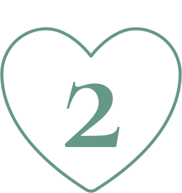

7 психологических причин, почему мы так любим фото котиков в интернете
Почему многим так нравятся фотографии этих животных, рисованные картинки с ними, мультяшные изображения? Возможно, что этой любви есть разумное объяснение.

Почему многим так нравятся фотографии этих животных, рисованные картинки с ними, мультяшные изображения? Возможно, что этой любви есть разумное объяснение.
Кошка практически у любого человека ассоциируется с домашним уютом
Это милое мурлыканье, вальяжные позы… Есть в них нечто ленивое и домашнее, навевающее теплые эмоции.


Кошки поражают своим разнообразием
Каких только пород нет, каких только расцветок. Интересно, как животные одного и того же рода, могут быть такими разными, и в то же время похожими.

Маленькие котятки восхищают зрителей по тому же принципу, что и прочие малыши – звериные или человеческие.
Маленькие создания, как правило, выглядят смешно, и в то же время мило. В их неуклюжести, детской наивности – есть что-то невероятно притягательное.

Котики нравятся людям, потому что обладают характером, привычками, собственными желаниями
Есть ленивцы, которые даже до собственной чашки с едой идут неторопливо; есть метеоры, которые виснут на шторах, «ходят» по потолку и держат в страхе соседскую собаку.

Котики часто попадают в нелепые ситуации
Есть красавцы грациозные, которые в буквальном смысле – самовлюбленные
нарциссы; есть бандиты, есть хулиганы, есть коты-рыбаки, есть очень
умные коты, а есть те, что прикидываютс я глупыми.
Одним словом –
миллионы разных характеров во всех оттенках их проявления. Порой по
одному взгляду на фото котика м ожно сказать, кто это – милая домашняя
мышеловка или озорница и хулиганка.
На самом деле этих ситуаций гораздо больше, чем тех, что хозяева
успевают запечатлеть.
И это всегда вызывает улыбку. Кошки – это
животные, которые умеют сидеть, лежать и даже засыпать – в невероятных
позах. Глядя на такие картинки, невозможно не улыбнуться.

Для людей, которые кошек любят – каждая картинка – это напоминание о своем питомце
Подсознательно, люди получают удовольствие от просмотра картинок – практически такое же, как от взгляда на фотографию собственного любимца.

Даже те, кто кошек не любит, картинки с котиками - смотрят
Потому что внешне – это действительно невероятно красивые, артистичные, комичные и фотогеничные животные. Чаще тех, кто кошек не любит – не устраивает их характер, но это уже совсем другая история.